Derivació simbòlica amb MATLAB®
Contents
Càlcul de derivades parcials
Suposem que volem trobar les derivades parcials de la funció:
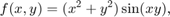
això ho fem amb la comanda diff, havent prèviament declarat 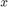 i 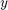 com variables simbòliques i definit la funció 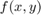
syms x y % declarem x i y com % varibles simbòliques % ...i declarem $f$ com una funció simbòlica mitjançant la % comanda symfun: f = symfun((x.^2+y.^2).*sin(x.*y), [x,y])
f(x, y) = sin(x*y)*(x^2 + y^2)
Nota: de fet, els punts davant del sigmes ^, *, /, etc, que necessitàvem per a vectoritzar les funcions no calen quan treballem amb funcions simbòliques.
A continuació calculem les derivades parcials de 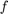 respecte de i respecte de . Com ja hem dit, usarem la funció diff, tot indicant la variable respecte de la qual es deriva,
fx=diff(f(x,y),x); % parcial respecte x fx=simplify(fx) % si cal (en aquest cas, sembla que no) pretty(fx) % per que surti 'bonic'
fx =
2*x*sin(x*y) + y*cos(x*y)*(x^2 + y^2)
2 2
2 x sin(x y) + y cos(x y) (x + y )
Veiem que el resultat és,
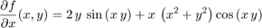
De la mateixa manera, podem calcular la derivada parcial respecte y, fent
fy=diff(f(x,y),y); % parcial respecte y fy=simplify(fy) % si cal (en aquest cas, sembla que tampoc) pretty(fy) % perquè surti 'bonic'
fy =
2*y*sin(x*y) + x*cos(x*y)*(x^2 + y^2)
2 2
2 y sin(x y) + x cos(x y) (x + y )
És a dir,
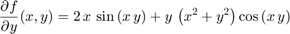
Càlcul del gradient
El gradient es calcula amb la funció MATLAB gradient. Per exemple, podem torbar el gradient de la funció de la secció anteiror tot escrivint,
gradf = gradient(f(x,y)) % Càlcul del gradient de f(x,y) pretty(gradf) % per que surti 'bonic'
gradf = 2*x*sin(x*y) + y*cos(x*y)*(x^2 + y^2) 2*y*sin(x*y) + x*cos(x*y)*(x^2 + y^2) / 2 2 \ | 2 x sin(x y) + y cos(x y) (x + y ) | | | | 2 2 | \ 2 y sin(x y) + x cos(x y) (x + y ) /
És a dir, el vector gradient de la funció al punt 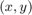 resulta,
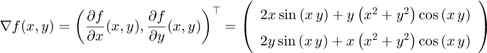
on fem servir el símbol 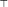 per denotar la transposició de matrius.
Càlcul de la matriu hessiana
Per a calcular la matriu hessina (recordem, la matriu de les derivades parcials segones) farem servir la MATLAB hessian. Continuant amb la mateixa funció ,
hessf = hessian(f(x,y),[x,y]); % indiquem la funció i les variables hessf = simplify(hessf) % simplifiquem... pretty(hessf) % per que surti 'bonic'
hessf =
[ 2*sin(x*y) + 4*x*y*cos(x*y) - y^2*sin(x*y)*(x^2 + y^2), (x^2 + y^2)*(3*cos(x*y) - x*y*sin(x*y))]
[ (x^2 + y^2)*(3*cos(x*y) - x*y*sin(x*y)), 2*sin(x*y) + 4*x*y*cos(x*y) - x^2*sin(x*y)*(x^2 + y^2)]
2 2 2
[[2 sin(x y) + 4 x y cos(x y) - y sin(x y) (x + y ), #1],
2 2 2
[#1, 2 sin(x y) + 4 x y cos(x y) - x sin(x y) (x + y )]]
where
2 2
#1 == (x + y ) (3 cos(x y) - x y sin(x y))
Aleshores, per a la matriu Hessiana obtenim
![$$\renewcommand{\arraystretch}{1.5}
\mathrm{Hess} f(x,y) =
\left(\begin{array}{cc}
\frac{\partial^{2} f}{\partial x^{2}}(x,y) &
\frac{\partial^{2} f}{\partial x\partial y} (x,y)\\
\frac{\partial^{2} f}{\partial y\partial x} (x,y) &
\frac{\partial^{2} f}{\partial y^{2}}(x,y)
\end{array}\right) =
\left(\begin{array}{cc}
2\,\sin\left(x\,y\right)+4\,x\,y\,\cos\left(x y\right)-y^2\,
\sin\left(x\,y\right)\,\left(x^2+y^2\right) &
\left(x^2+y^2\right)\,\left(3\,\cos\left(x y\right)-x\,y\,
\sin\left(x\,y\right)\right)\\ \left(x^2+y^2\right)\,\left(3\,
\cos\left(x\,y\right)-x\,y\,\sin\left(x y\right)\right) & 2\,
\sin\left(x\,y\right)+4\,x\,y\,\cos\left(x y\right)-x^2\,
\sin\left(x\,y\right)\,\left(x^2+y^2\right)
\end{array}\right)$$](derivacioSimbolicaAmbMatlab_eq04470352360428896831.png)
Comprovem-ho calculant cadascuna de les derivades parcials per separat. En efecte,
fxx = diff(f(x,y),x,x); % parcial 2ona respecte de x dos cops fxy = diff(f(x,y),x,y); % parcial 2ona respecte de x i de y fyy = diff(f(x,y),y,y); % parcial 2ona respecte de y dos cops fxx = simplify(fxx); fxy = simplify(fxy); fyy = simplify(fyy); A = [fxx fxy; fxy fyy] pretty(A)
A =
[ 2*sin(x*y) + 4*x*y*cos(x*y) - y^2*sin(x*y)*(x^2 + y^2), (x^2 + y^2)*(3*cos(x*y) - x*y*sin(x*y))]
[ (x^2 + y^2)*(3*cos(x*y) - x*y*sin(x*y)), 2*sin(x*y) + 4*x*y*cos(x*y) - x^2*sin(x*y)*(x^2 + y^2)]
2 2 2
[[2 sin(x y) + 4 x y cos(x y) - y sin(x y) (x + y ), #1],
2 2 2
[#1, 2 sin(x y) + 4 x y cos(x y) - x sin(x y) (x + y )]]
where
2 2
#1 == (x + y ) (3 cos(x y) - x y sin(x y))
Nota: com que la funció és de classe 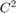, sabem que les derivades parcials 'creuades' coincideixen. Això és el que, per defecte, suposa el MATLAB.
La differència entre les dues matrius, i.e., la calculada directament amb la funció hessian i la construïda directament amb les derivades parcials 2ones hauria de donar la matriu nul·la (això és, la matriu amb totes les seves components igual a 0). En efecte,
err = simplify(hessf - A) % Comprovació: hauria de sortir % una matriu amb tot de zeros.
err = [ 0, 0] [ 0, 0]
OK!
Matriu Jacobiana
Sigui la funció:
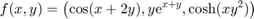
(problema 21, apartat (c) de la col·lecció). Volem calcular la seva matriu Jacobiana (i.e., la seva matriu de derivades). La funció de MATLAB que cal fer utilitzar és jacobian. Vegem-ho,
f = symfun([cos(x+2*y),y*exp(x+y),cosh(x.*y.^2)],[x,y]) % definim la funció Jf = jacobian(f(x,y),[x,y]); Jf = simplify(Jf) pretty(Jf) % per que surti 'bonic'
f(x, y) = [ cos(x + 2*y), y*exp(x + y), cosh(x*y^2)] Jf = [ -sin(x + 2*y), -2*sin(x + 2*y)] [ y*exp(x + y), exp(x + y)*(y + 1)] [ y^2*sinh(x*y^2), 2*x*y*sinh(x*y^2)] / -sin(x + 2 y), -sin(x + 2 y) 2 \ | | | y exp(x + y), exp(x + y) (y + 1) | | | | 2 2 2 | \ y sinh(x y ), 2 x y sinh(x y ) /
D'on tenim que la matriu de derivades de la funció al punt és,
![$$ J_{f}(x,y) =
\renewcommand{\arraystretch}{1.5}
\left(\begin{array}{cc}
\frac{\partial f_{1}}{\partial x}(x,y) &
\frac{\partial f_{1}}{\partial y}(x,y)\\
\frac{\partial f_{2}}{\partial x}(x,y) &
\frac{\partial f_{2}}{\partial y}(x,y)\\
\frac{\partial f_{3}}{\partial x}(x,y) &
\frac{\partial f_{3}}{\partial y}(x,y)\end{array}\right) =
\left(\begin{array}{cc}
-\sin\left(x+2\,y\right) & -2\,\sin\left(x+2\,y\right)\\
y\,{\mathrm{e}}^{x+y} & \left(y+1\right){\mathrm{e}}^{x+y}\\
y^2\,\mathrm{sinh}\left(x\,y^2\right) &
2\,x\,y\,\mathrm{sinh}\left(x\,y^2\right) \end{array}\right)$$](derivacioSimbolicaAmbMatlab_eq11037821294521393858.png)